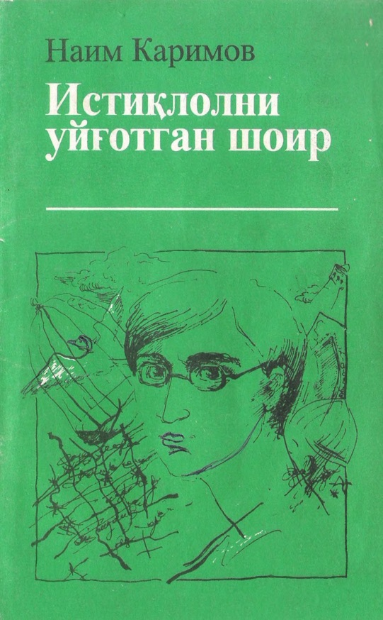
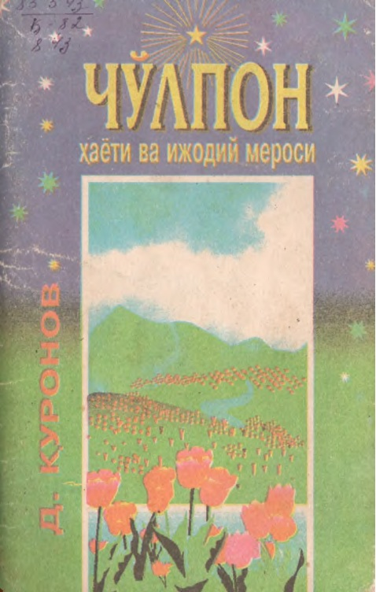
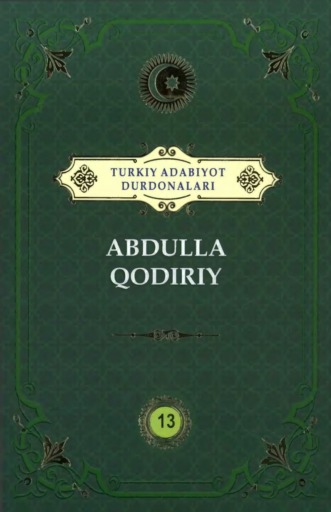

«Padarkush» yoxud o'qimagan bolaning holi
Turkistondagi birinchi milliy drama. Unda jaholat, ilmsizlik va tarbiyasizlikning mudhish oqibatlari fojiali drama vositasida ko'rsatib berilgan.

«O'tkan kunlar» romani
O'zbek romanchiligining birinchi durdonasi. XIX asr o'rtalaridagi Qo'qon xonligi davri fojialari, mustamlakachilik arafasidagi milliy tanazzul sabablari tahlil qilinadi.

«Kecha va kunduz» romani
O'zbek xalqining ma'naviy uyg'onishi va fojiasini Zebi timsolida tasvirlagan roman. Cho'lpon o'zbek psixologik nasrini yangi bosqichga olib chiqqan.

«Rahbari najot» (Najot yo'li)
Jamiyat, inson kamoloti, oila tarbiyasi va ijtimoiy burchlar to'g'risidagi fundamental falsafiy-axloqiy asar. Buxoroda jiddiy rezonans uyg'otgan.

«Turkiy Guliston yoxud axloq»
O'zbek pedagogikasi va axloqshunosligining poydevori bo'lgan asar. «Tarbiya biz uchun yo hayot - yo mamot, yo najot - yo halokat...» g'oyasi ilgari surilgan.

«Adibi avval» (Birinchi adib)
Yangi usuldagi maktablar uchun tuzilgan birinchi o'zbek alifbe darsligi. Bolalarga qisqa muddatda savod chiqarish uslubi joriy etilgan.